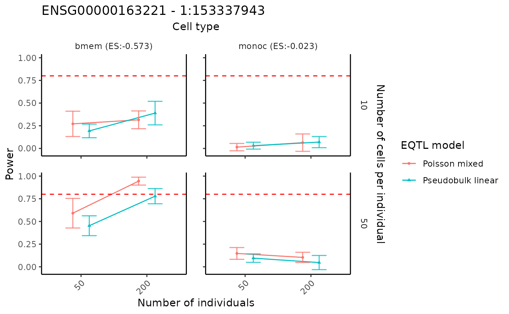
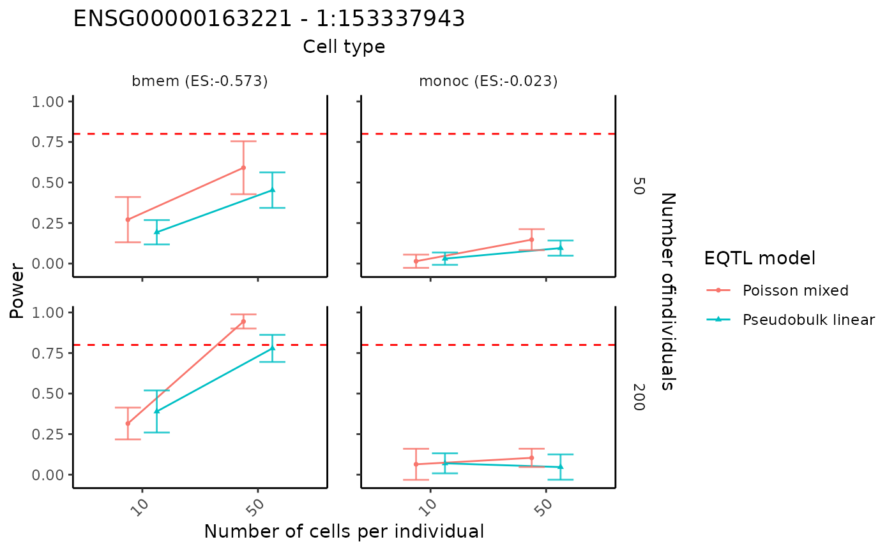

Power analysis for selected genes
Chris Dong
Department of Statistics and Data Science, University of California, Los Angelescycd@g.ucla.edu
Yihui Cen
Department of Computational Medicine, University of California, Los Angelesyihuicen@g.ucla.edu
21 May 2025
Source:vignettes/scDesignPop-power-analysis-selected.Rmd
scDesignPop-power-analysis-selected.RmdIntroduction
scDesignPop provides power analysis tools at cell-type-specific level. The tutorial here is about how to conduct the power analysis for selected genes using the expression count data.
Library and data preparation
Given raw count data, scDesignPop can also perform simulation-based
power analysis for a specific gene-SNP pair across cell types from the
expression count data. A list of data is required as input. This is done
using the constructDataPop function. A
SingleCellExperiment object and an eqtlgeno
dataframe are the two main inputs needed. The eqtlgeno
dataframe consists of eQTL annotations (it must have cell state, gene,
SNP, chromosome, and position columns at a minimum), and genotypes
across individuals (columns) for every SNP (rows). The structure of an
example eqtlgeno dataframe is given below.
library(scDesignPop)
library(SingleCellExperiment)
load("/home/ycen/proj/scEQTLsim/data/tutorials/example_sce.rda")
load("/home/ycen/proj/scEQTLsim/data/tutorials/example_eqtlgeno.rda")
example_sce_sel <- example_sce[c("ENSG00000163221","ENSG00000135218"),]
example_eqtlgeno_sel <- example_eqtlgeno[
which(example_eqtlgeno$gene_id%in%c("ENSG00000163221","ENSG00000135218")),]
data_list_sel <- constructDataPop(
sce = example_sce_sel,
eqtlgeno_df = example_eqtlgeno_sel,
new_covariate = as.data.frame(colData(example_sce_sel)),
overlap_features = NULL,
sampid_vec = NULL,
ct_copula = TRUE,
slot_name = "counts",
snp_model = "single",
cellstate_colname = "cell_type",
feature_colname = "gene_id",
snp_colname = "snp_id",
loc_colname = "POS",
chrom_colname = "CHR",
indiv_colname = "indiv",
prune_thres = 0.9
)Fitting the marginal model
Next, a marginal model is specified to fit each gene using the
fitMarginalPop function.
Here we use a Negative Binominal as the parametric model using
"nb".
marginal_list_sel <- fitMarginalPop(
data_list = data_list_sel,
mean_formula = "(1|indiv) + cell_type",
model_family = "nb",
interact_colnames = "cell_type",
parallelization = "pbmcapply",
n_threads = 1L,
loc_colname = "POS",
snp_colname = "snp_id",
cellstate_colname = "cell_type",
indiv_colname = "indiv",
filter_snps = TRUE,
snpvar_thres = 0,
force_formula = FALSE,
data_maxsize = 1
)Performing power analysis
Given fitted marginal model, scDesignPop can perform simulation-based
power analysis for a specific gene-SNP pair across selected cell types
using the runPowerAnalysis function. Based on the previous
naming of covariates, we specify the fitted snpid as
"1:153337943", the name of the column for fixed cell state
effect and random individual effect as "cell_type" and
"indiv" in the input parameters. To check these namings, we
can call the covariate data frame using
marginal_list_sel[["ENSG00000163221"]]$fit$frame. The
selected cell types for testing are specified in cellstate_vector and
have to be consistent with the covariate data frame.
Particarly, parameters snp_number and
gene_number are used to account for multiple testing
correction with Bonferroni correction. Parameter methods is
used to specify the marginal eQTL model from
c("nb", "poisson", "gaussian", "pseudoBulkLinear").
Parameter nindivs and ncells are used to
specify the number of individuals and number of cells per individual,
from which we can analyze the performance of power analysis and find the
optimal setting.
set.seed(123)
power_data <- runPowerAnalysis(marginal_list = marginal_list_sel,
geneid = "ENSG00000163221",
snpid = "1:153337943",
cellstate_colname = "cell_type",
cellstate_vector = c("bmem", "monoc"),
indiv_colname = "indiv",
methods = c("poisson","pseudoBulkLinear"),
nindivs = c(50, 200),
ncells = c(10),
alpha = 0.05,
power_nsim = 50,
snp_number = 10,
gene_number = 200,
CI_nsim = 1000,
CI_conf = 0.05,
ncores = 50L)
#> [1] -4.160949
#> [1] -0.5727631
#> [1] 1.803924
#> [1] -0.02272728
#> [1] -4.160949
#> [1] -0.5727631
#> [1] 1.803924
#> [1] -0.02272728Visualization of power results
The power analysis results can be visualized using the
visualizePowerResult function. The cell type names in the
cellstate_vector in the input parameters above must be
included in the above power analysis.
visualizePowerResult(power_result = power_data,
cellstate_vector = c("bmem", "monoc"),
x_axis = "nindiv",
y_axis = "ncell",
col_group = "method",
geneid = "ENSG00000163221",
snpid = "1:153337943")
By swaping the x and y axis, we can show the result in a different way.
visualizePowerResult(power_result = power_data,
cellstate_vector = c("bmem", "monoc"),
x_axis = "ncell",
y_axis = "nindiv",
col_group = "method",
geneid = "ENSG00000163221",
snpid = "1:153337943")